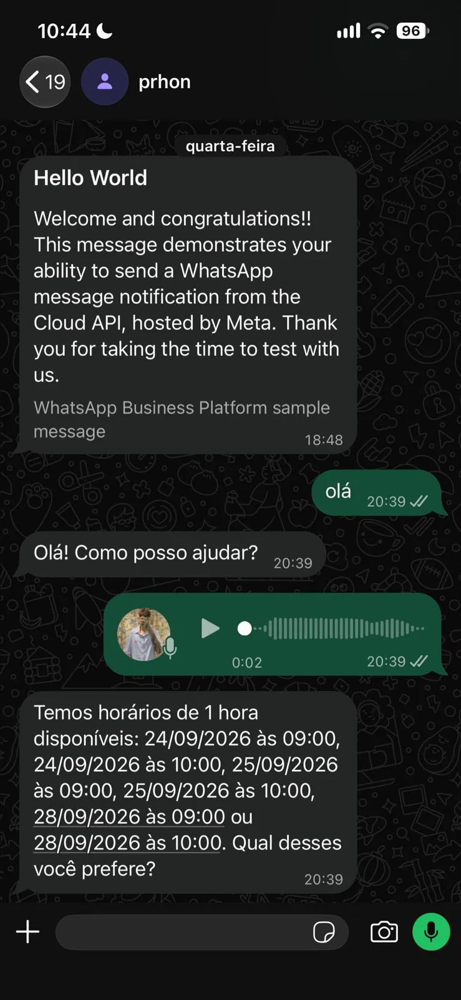

Recognizable contexts
The side navigation keeps the available paths in view while the workspace content changes. Users don’t need to go back to a home screen to find their way.
Digital product
I’m building a space that connects routine, information and assistance.
 Enlarge
Enlarge The starting point
PHRON is my personal project in development. The idea is to bring work, study and personal life together in a space where information and assistance can be consulted side by side.
I’m developing the experience and the implementation in parallel. The Home shown here is the current stage of the interface: side navigation, widgets and assistant on a single screen. It is a snapshot of the process, not a finished product yet.
The side navigation keeps the available paths in view while the workspace content changes. Users don’t need to go back to a home screen to find their way.
Widgets organize the central space. The layout treats the workspace as something that can be adjusted, not as a single fixed dashboard.
The assistant has its own column. The conversation and the main content can coexist on the same screen, keeping the context of what is being done.

EnlargeDevelopment
I develop PHRON locally with Next.js and React. The build is organized into three areas: navigation, workspace and assistance. This split lets the interface and the flows of each part evolve over the course of the project.
The images record the development stage of September 27, 2026: the Home in dark mode and a conversation test over WhatsApp.
In the test, the conversation includes a voice message and a reply with available times. It is a single demonstration of the integration in progress; the remaining flows and capabilities still need to be finished and validated.